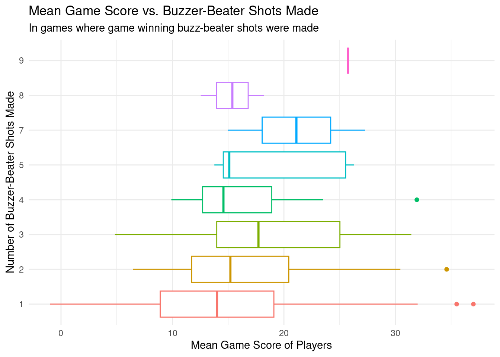

About Me
About Me Projects
Projects  Resume
Resume
In-Depth Analysis of NBA Games
Written By: Gurleen Kaur, Nolam Vilim, Genie Enders, and Pranavi Gupta
The National Basketball Association (NBA) is a professional basketball league in North America. The league is composed of 30 teams and is one of the major professional sports leagues in the United States and Canada. The NBA is an active league with games being played almost every day. The league has a rich history with many memorable moments. One of the most exciting moments in basketball is the buzzer-beater shot. A buzzer-beater shot is a shot that is taken just before the game clock expires. These shots are often taken in high-pressure situations and can be the difference between winning and losing a game. In this article, we will analyze the buzzer-beater shots in NBA history and see what we can learn from them.
Data Description
This dataset was created to aggregate, for the first time in a single dataset, data on all
NBA
games decided by
game-winning buzzer-beater shots in a single place. The creation of this dataset was undertaken and funded by
https://www.basketball-reference.com whose goal is to create and publicize factual data about professional
basketball games and players.
This dataset contains an entry for each player who made a game-winning
buzzer-beater shot in NBA history. There are players with multiple entries in the dataset since some players
have won multiple games for their teams this way. The attributes of the dataset include the players' names and
teams, the date of the game, and various game-level statistics about the players. These statistics include, but
are not limited to, minutes played, field goals, field goal attempts, assists, steals, blocks, and game score (a
standard statistic aggregating an individual players' performance in a single game based on a variety of
factors). There are 820 entries in the dataset, dating back to December 10, 1946 and coming from as recently as
March 17, 2023. This data represents a sample of the larger population of all NBA games since the entries in it
represent only games won by buzzer-beater shots.
Research Questions
- Is there a relationship between a player’s Game Score, which is a summary measure of a player’s overall contribution to a game, and their likelihood of making a buzzer-beater shot in NBA/BAA history?
- What is the average distance from the basket for game-winning buzzer-beater shots?
- What is the average number of minutes played in a game for players who score a buzzer-beater shot?
- How has the frequency of game-winning buzzer beater shots changed from year to year?
- What factors are associated with successful game-winning buzzer-beater shots in NBA/BAA history, and how do these factors vary?
Hypotheses
- Players who have made more steals, blocks, and assists (as summarized and weighted by the Game Score) throughout the game are most likely to be the people who score the buzzer-beating, game-winning shot.
- During some years, there are outside factors like COVID or a dominant team (further, scores in games with these teams are not even close, so why try to make the shot) that makes buzzer-beating shots less desirable.
- The average player who makes the buzzer-beating shot has played for more than 30 minutes.
Data Analysis
For every 1 point increase in a player’s mean game score across every game they have made a
game
winning buzzer-beat shot, the number of game winning buzzer-beater shots they make increases by 0.026 shots, on
average.
When mean game score is 0, the number of buzzer-beater shots made is 1.129, on average.
The
mean number
of game winning buzzer-beater shots made by players who have made at least one such shot is ~1.52 shots.
For every one additional year that a game was played, the annual average shot distance
increases
by 0.0134 feet, on average. This shows that the average distance of buzzer-beater shots has increased over time.
In the year 0, the average distance of a buzzer-beater shot was -10.16 feet. This intercept is not
meaningful, as the NBA did not exist in year 0, and a shot from negative feet would be made from behind the
basket, which is against the rules of the NBA.
In this chart, we examine how the game score and distance of game-winning buzzer-beater shots in NBA/BAA history vary and correlate with one another depending on whether the shot was assisted or unassisted. The scatterplot displays the relationship between two variables: Game Score (x-axis) and Distance (y-axis), with the points colored according to whether the shot was assisted or unassisted. The regression line indicate the interaction between Game Score and assisted/unassisted shots. The line show that successful unassisted shots tend to be made from closer range compared to successful assisted shots. Moreover, the lines suggest a slightly positive relationship between Game Score and Distance, implying that players with higher Game Scores are more likely to take shots from farther away.
Interpretations and Conclusions
Game Score vs. Number of Game Winning Buzzer-Beater Shots made:
To answer the question of if, out of the pool of NBA players who have made game winning
buzzer-beater shots, players who performed better on average in games where they scored a game winning
buzzer-beater shot were those who made the most buzzer-beater shots as we originally hypothesized, we first
visualized the relationship between average game score and number of such shots hit for each player as a
boxplot. This plot alone did not reveal any significant relationship between these two variable. While it is
true that those who only scored 1 game winning buzzer-beater had the lowest median game score at ~14, and the
player who scored the most of these shots at 9 had the highest median game score of ~26, there is no clear
uniform trend in the data that suggests a correlation between these variables. For example, those players who
hit 4 or 5 buzzer-beater shots in their careers had lower median game scores than those who hit 2 or 3.
Failing to identify a relationship from this boxplot, we then created a linear regression model to be able to
predict the number of buzzer-beater shots a player could be expected to make based off of their average
gamescore. In our evaluation of the model’s significance, we calculated the R^2 value to be equal to ~0.03 and
concluded that this model is not useful, accounting for only 3% of the variability in number of game winning
buzzer-beater shots hit as determined by average game score, or, in other words, how well those players
performed on average in games where they hit a game-winning buzzer-beater shot. To further test if there is a
relationship between these variables, we conducted a chi-squared test of independence between them. This test,
with a high p-value of 0.43, failed to detect any relationship between the number of game winning buzzer-beater
shots made and average game score of all players who have hit some number of these shots. This further reaffirms
that the two variables are independent. From these results, we conclude that game performance is very likely not
representative of a players’ ability to make a game winning buzzer-beater shot.
Year vs. Average Distance from Basket of Buzzer-Beater Shot:
We had initially hypothesized that the average distance from the basket of a buzzer-beater
shot
has increased over time as more adept players have played professional basketball with better coaching,
nutrition plans, etc. Nonetheless, this proved to be untrue as the model shows that the distance has only
increased very slightly by, according to the model, only about 0.0134 feet per year, on average. As shown on the
graph, the average distance from the basket has not been 0ft since 1962, showing that there has been an increase
over time. However, this change did not appear to be statistically significant.
The R^2 value of the model is very small at 0.00169, indicating that the model does not offer a lot in terms of
explaining the variability in average shot distance. The lower bound of a 95% confidence interval of the average
distance is 14.79 feet and the upper bound is 18.12 feet, making the average range very small, also indicating
that the average distance has not changed too much over time. The p-value is also very high at 0.952, again
showing that there has not been much change. Year and average distance thus do not appear to be correlated.
Factors that are associated with successful Buzzer-Beater Shots:
We then tested our hypothesis that game score combined with whether or not the shot was
assisted
contributed to the success of a game winning buzzer-beater shot. In our analysis, we found that these variables
were significant predictors of the distance of buzzer-beater shots, with assists having the strongest
relationship. The model showed that players were more likely to make successful buzzer-beater shots when they
were assisted, indicating that teamwork and passing play a significant role in the success of buzzer-beaters.
Additionally, higher-performing players, as indicated by their game score, were more likely to make successful
buzzer-beater shots. However, our model only explained 10.7% of the variability in the distance of the shots,
suggesting that other factors, such as the shooter’s skill level and defense’s positioning, may also be
significant factors in the success of buzzer-beater shots.
We are confident in this conclusion because our analysis employed a rigorous statistical model that controlled
for confounding variables and examined the significance of each predictor variable. The small p-values for the
predictor variables in our model indicate that the model is highly significant, and we were able to reject the
null hypothesis that the predictor variables had no effect on the response variable. These findings suggest that
passing and teamwork are essential for successful buzzer-beater shots, and higher-performing players may have an
advantage in making these shots.
General Conclusions and Future Work:
In the context of real-life basketball games, our analysis highlights the importance of
teamwork
and individual performance in determining the success of buzzer-beater shots. Coaches and players may want to
consider these findings when developing game strategies and identifying players to take crucial last-second
shots. Additionally, our results suggest that further research could investigate the impact of other factors,
such as shooter’s skill level and defense’s positioning, on the success of buzzer-beater shots.
However, while these quantifiable factors may be indicators of higher rates of success, it is also very likely
that the ability to consistently make game winning buzzer-beater shots comes down to, as far as the data is
concerned, simple randomness. The real world is much more complicated than regression models, and major
performance indicators also include non-quantifiable factors, such as a players’ ability to perform well under
intense pressure. These qualities are difficult to measure, and will very player-by-player and game-to-game.
This suggests that, while player stats may be useful, it is also up to the coaches to assess their players
within the context of each game when picking a strategy to employ should the opportunity arise to attempt one of
these shots.
In the future, further analyses could be conducted on more of the variables in the dataset to determine other
possible correlations. Furthermore, similar analyses could be applied to other sports (e.g. last-second
touchdown attempts in Football) to attempt to get an insight into the factors that make scoring synonymous
goals, shots, runs, etc… more likely. Based on our results in this study, it is likely that similar conclusions
would be drawn from similar studies on other sports, the most significant of which is that players are more than
their statistics.
Connect With Me!

https://www.linkedin.com/in/gurleen-kaur-b42019167/
 (347) 863-4560
(347) 863-4560

gk325@cornell.edu